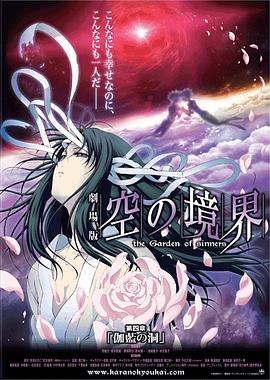

空之境界 第四章 伽蓝之洞 / 劇場版 空の境界 第四章 伽藍の洞
又名：空之境界剧场版：第四章 伽蓝之洞(台) / 空之境界电影版4：伽蓝之洞 / Gekijô ban Kara no kyôkai: Dai yon shô - Garan no dô
不错，整体设定。
同系列作品
豆瓣作品页于 2026-09-04T12:13:53+10:00 提供的列表 · 列表范围未知
- 空之境界 第一章 俯瞰风景 / 劇場版 空の境界 第一章 俯瞰風景 · 看过 · ★★★★☆
- 空之境界 第二章 杀人考察（前） / 劇場版 空の境界 第二章 殺人考察（前） · 看过 · ★★★★☆
- 空之境界 第三章 痛觉残留 / 劇場版 空の境界 第三章 痛覚残留 · 看过 · ★★★★☆
- 空之境界 第五章 矛盾螺旋 / 劇場版 空の境界 第五章 矛盾螺旋 · 看过 · ★★★★★
- 空之境界 第六章 忘却录音 / 劇場版 空の境界 第六章 忘却録音 · 看过 · ★★★★☆
- 空之境界 第七章 杀人考察（后） / 劇場版 空の境界 第七章 殺人考察（後） · 看过 · ★★★★★
- 空之境界 终章 空之境界 / 劇場版 空の境界 終章 空の境界 · 看过 · ★★★☆☆
页面标示「全部 8」；本次记录含 7 个条目，不保证包含全部系列作品。
其他作品页中的关联
- 空之境界 终章 空之境界 / 劇場版 空の境界 終章 空の境界 的作品页曾将本作列入同系列（观测于 2026-09-04T12:13:39+10:00）。
- 空之境界 第七章 杀人考察（后） / 劇場版 空の境界 第七章 殺人考察（後） 的作品页曾将本作列入同系列（观测于 2026-09-04T12:13:42+10:00）。
- 空之境界 第六章 忘却录音 / 劇場版 空の境界 第六章 忘却録音 的作品页曾将本作列入同系列（观测于 2026-09-04T12:13:45+10:00）。
- 空之境界 第五章 矛盾螺旋 / 劇場版 空の境界 第五章 矛盾螺旋 的作品页曾将本作列入同系列（观测于 2026-09-04T12:13:48+10:00）。
- 空之境界 第三章 痛觉残留 / 劇場版 空の境界 第三章 痛覚残留 的作品页曾将本作列入同系列（观测于 2026-09-04T12:13:56+10:00）。
- 空之境界 第二章 杀人考察（前） / 劇場版 空の境界 第二章 殺人考察（前） 的作品页曾将本作列入同系列（观测于 2026-09-04T12:13:59+10:00）。
- 空之境界 第一章 俯瞰风景 / 劇場版 空の境界 第一章 俯瞰風景 的作品页曾将本作列入同系列（观测于 2026-09-04T12:14:03+10:00）。
作品信息
| 导演 | 泷口祯一 |
| 编剧 | 平松正树 |
| 主演 | 坂本真绫 / 铃村健一 / 本田贵子 / 藤村步 / 东地宏树 / 中田让治 / 井口裕香 / 石上裕一 / 田中理惠 / 能登麻美子 / 保志总一朗 |
| 类型 | 动画 / 奇幻 |
| 制片国家/地区 | 日本 |
| 语言 | 日语 |
| 上映日期 | 2008-05-24 |
| 片长 | 45分钟 |
| IMDb | tt1233474 |
最后一次看到是 2026-09-04T09:54:58+10:00 · 豆瓣原页